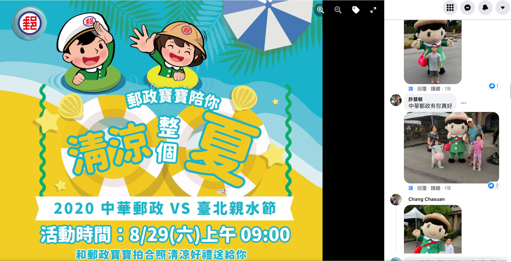

服務說明
線下活動不只是「辦活動」，而是一次高度整合的品牌接觸儀式。從前期籌備到現場執行，我們的工作不是僅止於完成任務，更關注「參與者與品牌之間是否產生了有溫度的連結」。無論是戶外快閃、記者會、校園徵才、商圈活動、市集策展、公部門政令宣導、企業家庭日或內部教育訓練，只要你需要「人與人面對面建立品牌好感」，我們都能從零打造、全案規劃。
我們會深入理解你的品牌個性、傳遞目的與可動員資源，從「策略設計」開始建構適合的活動模式，再依據預算、時程與資源整合，分段提供「活動提案」、「素材製作」、「動線安排」、「現場控場」、「紀錄拍攝」與「後續成效報告」等各種模組化服務，協助你最大化每一場活動的價值。
- ▸ 活動前期統籌與目標設定：協助釐清活動目的與KPI，從目標往回設計流程
- ▸ 現場執行與團隊分工：主持流程、報到系統、志工管理、來賓動線控管
- ▸ 設計素材與製作：DM、橫幅、主視覺輸出、文宣物、遊戲道具整合
- ▸ 社群搭配整合：活動前社群預熱、現場直播、活動後紀錄與延伸貼文
- ▸ 成果報告與後續建議：協助回收問卷、計算效益、彙整照片與數據
如果你曾經遇過「活動很熱鬧但無法留名」、「執行單位配合度低」、「照片無法交差」、「KPI無法衡量」的問題，我們將會是你最強的後援。用一場活動，讓參與者記住品牌、記得你們，才是我們的真正目標。
實體活動案例

中華郵政現場活動，結合現場粉絲團活動打卡，上傳參與照片，貼文互動提升75%，參與人數達百人以上

中華郵政現場活動

中華郵政現場活動

公中華郵政現場活動

中華郵政現場活動